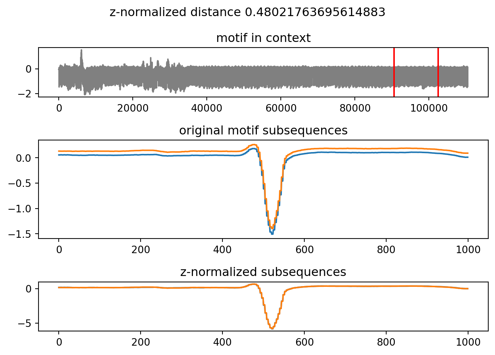

import pyattimoPyAttimo: scalable time series motifs mining with Python
This document showcases the usage of the pyattimo Python package for time series motif discovery, on a rather standard laptop. Most notably, the pyattimo allows to enumerate the motifs one at a time, investing only the computation needed to return the next motif.
Setting things up
First and foremost, let’s import the pyattimo package.
Then, let’s load a dataset from the ones shipped with the python package. On the first run it will be downloaded on your machine from this Figshare. In this example, we are just loading the first million points from the dataset
ts = pyattimo.load_dataset("ecg", prefix=1000000)The time series looks like the following.
The above display looks a bit crowded, but if we focus on the first 10000 points, we can more clearly see the structure.
Looking for motifs, interactively
The pyattimo package provides a rather simple iterator interface:
- you first construct an instance of the
MotifsIteratorobject, specifying the time series, the motif length, and other parameters; - then you repeatedly call
nexton this object to iterat through it
Constructing the iterator requires a time proportional to the time series length. On my dual core machine, this is about 7.8 seconds for our example time series of length 1000000.
%time motifs = pyattimo.MotifsIterator(ts, w=1000, max_k=100)CPU times: user 12.6 s, sys: 263 ms, total: 12.9 s
Wall time: 7.94 sOnce the index is built, we can ask for the first motif. The time required for this operation depends on how distances between subsequences are distributed, rather than by how long the time series is.
%time m = next(motifs)CPU times: user 17.7 s, sys: 202 ms, total: 17.9 s
Wall time: 9.48 sThe returned pyattimo.Motif object allows to retrieve the starting indices of the subsequences composing the motif, along with the z-normalized Euclidean distance between the two subsequences.
print("Index of first subsequence", m.a)
print("Index of second subsequence", m.b)
print("z-normalized Euclidean distance", m.distance)Index of first subsequence 723776
Index of second subsequence 796052
z-normalized Euclidean distance 0.4335137534580184Furthermore, you can access the data of the subsequences themselves:
print(m.values_a())[-0.734, -0.734, -0.734, -0.734, -1.002, -1.002, -1.002, -1.002, -1.22, -1.22, -1.22, -1.22, -1.376, -1.376, -1.376, -1.376, -1.482, -1.482, -1.482, -1.482, -1.476, -1.476, -1.476, -1.476, -1.351, -1.351, -1.351, -1.351, -1.218, -1.218, -1.218, -1.218, -1.066, -1.066, -1.066, -1.066, -0.879, -0.879, -0.879, -0.879, -0.642, -0.642, -0.642, -0.642, -0.376, -0.376, -0.376, -0.376, -0.192, -0.192, -0.192, -0.192, -0.103, -0.103, -0.103, -0.103, -0.066, -0.066, -0.066, -0.066, -0.044, -0.044, -0.044, -0.044, -0.028, -0.028, -0.028, -0.028, -0.01, -0.01, -0.01, -0.01, 0.001, 0.001, 0.001, 0.001, 0.009, 0.009, 0.009, 0.009, 0.016, 0.016, 0.016, 0.016, 0.024, 0.024, 0.024, 0.024, 0.031, 0.031, 0.031, 0.031, 0.038, 0.038, 0.038, 0.038, 0.044, 0.044, 0.044, 0.044, 0.048, 0.048, 0.048, 0.048, 0.051, 0.051, 0.051, 0.051, 0.054, 0.054, 0.054, 0.054, 0.057, 0.057, 0.057, 0.057, 0.06, 0.06, 0.06, 0.06, 0.061, 0.061, 0.061, 0.061, 0.065, 0.065, 0.065, 0.065, 0.066, 0.066, 0.066, 0.066, 0.068, 0.068, 0.068, 0.068, 0.07, 0.07, 0.07, 0.07, 0.068, 0.068, 0.068, 0.068, 0.068, 0.068, 0.068, 0.068, 0.07, 0.07, 0.07, 0.07, 0.07, 0.07, 0.07, 0.07, 0.068, 0.068, 0.068, 0.068, 0.067, 0.067, 0.067, 0.067, 0.068, 0.068, 0.068, 0.068, 0.07, 0.07, 0.07, 0.07, 0.07, 0.07, 0.07, 0.07, 0.068, 0.068, 0.068, 0.068, 0.068, 0.068, 0.068, 0.068, 0.07, 0.07, 0.07, 0.07, 0.07, 0.07, 0.07, 0.07, 0.068, 0.068, 0.068, 0.068, 0.067, 0.067, 0.067, 0.067, 0.07, 0.07, 0.07, 0.07, 0.067, 0.067, 0.067, 0.067, 0.066, 0.066, 0.066, 0.066, 0.066, 0.066, 0.066, 0.066, 0.068, 0.068, 0.068, 0.068, 0.068, 0.068, 0.068, 0.068, 0.066, 0.066, 0.066, 0.066, 0.067, 0.067, 0.067, 0.067, 0.068, 0.068, 0.068, 0.068, 0.068, 0.068, 0.068, 0.068, 0.068, 0.068, 0.068, 0.068, 0.067, 0.067, 0.067, 0.067, 0.068, 0.068, 0.068, 0.068, 0.07, 0.07, 0.07, 0.07, 0.068, 0.068, 0.068, 0.068, 0.067, 0.067, 0.067, 0.067, 0.068, 0.068, 0.068, 0.068, 0.068, 0.068, 0.068, 0.068, 0.068, 0.068, 0.068, 0.068, 0.067, 0.067, 0.067, 0.067, 0.07, 0.07, 0.07, 0.07, 0.07, 0.07, 0.07, 0.07, 0.07, 0.07, 0.07, 0.07, 0.07, 0.07, 0.07, 0.07, 0.07, 0.07, 0.07, 0.07, 0.07, 0.07, 0.07, 0.07, 0.068, 0.068, 0.068, 0.068, 0.067, 0.067, 0.067, 0.067, 0.068, 0.068, 0.068, 0.068, 0.067, 0.067, 0.067, 0.067, 0.067, 0.067, 0.067, 0.067, 0.067, 0.067, 0.067, 0.067, 0.066, 0.066, 0.066, 0.066, 0.068, 0.068, 0.068, 0.068, 0.067, 0.067, 0.067, 0.067, 0.067, 0.067, 0.067, 0.067, 0.068, 0.068, 0.068, 0.068, 0.07, 0.07, 0.07, 0.07, 0.07, 0.07, 0.07, 0.07, 0.07, 0.07, 0.07, 0.07, 0.07, 0.07, 0.07, 0.07, 0.071, 0.071, 0.071, 0.071, 0.07, 0.07, 0.07, 0.07, 0.071, 0.071, 0.071, 0.071, 0.07, 0.07, 0.07, 0.07, 0.071, 0.071, 0.071, 0.071, 0.068, 0.068, 0.068, 0.068, 0.066, 0.066, 0.066, 0.066, 0.065, 0.065, 0.065, 0.065, 0.063, 0.063, 0.063, 0.063, 0.061, 0.061, 0.061, 0.061, 0.06, 0.06, 0.06, 0.06, 0.057, 0.057, 0.057, 0.057, 0.055, 0.055, 0.055, 0.055, 0.055, 0.055, 0.055, 0.055, 0.052, 0.052, 0.052, 0.052, 0.05, 0.05, 0.05, 0.05, 0.049, 0.049, 0.049, 0.049, 0.046, 0.046, 0.046, 0.046, 0.043, 0.043, 0.043, 0.043, 0.039, 0.039, 0.039, 0.039, 0.037, 0.037, 0.037, 0.037, 0.033, 0.033, 0.033, 0.033, 0.028, 0.028, 0.028, 0.028, 0.023, 0.023, 0.023, 0.023, 0.02, 0.02, 0.02, 0.02, 0.016, 0.016, 0.016, 0.016, 0.01, 0.01, 0.01, 0.01, 0.004, 0.004, 0.004, 0.004, -0.001, -0.001, -0.001, -0.001, -0.006, -0.006, -0.006, -0.006, -0.011, -0.011, -0.011, -0.011, -0.016, -0.016, -0.016, -0.016, -0.022, -0.022, -0.022, -0.022, -0.021, -0.021, -0.021, -0.021, -0.024, -0.024, -0.024, -0.024, -0.023, -0.023, -0.023, -0.023, -0.023, -0.023, -0.023, -0.023, -0.023, -0.023, -0.023, -0.023, -0.02, -0.02, -0.02, -0.02, -0.018, -0.018, -0.018, -0.018, -0.017, -0.017, -0.017, -0.017, -0.013, -0.013, -0.013, -0.013, -0.011, -0.011, -0.011, -0.011, -0.007, -0.007, -0.007, -0.007, -0.006, -0.006, -0.006, -0.006, -0.006, -0.006, -0.006, -0.006, -0.006, -0.006, -0.006, -0.006, -0.004, -0.004, -0.004, -0.004, -0.002, -0.002, -0.002, -0.002, 0.001, 0.001, 0.001, 0.001, 0.001, 0.001, 0.001, 0.001, 0.004, 0.004, 0.004, 0.004, 0.005, 0.005, 0.005, 0.005, 0.007, 0.007, 0.007, 0.007, 0.009, 0.009, 0.009, 0.009, 0.009, 0.009, 0.009, 0.009, 0.009, 0.009, 0.009, 0.009, 0.01, 0.01, 0.01, 0.01, 0.012, 0.012, 0.012, 0.012, 0.012, 0.012, 0.012, 0.012, 0.012, 0.012, 0.012, 0.012, 0.012, 0.012, 0.012, 0.012, 0.012, 0.012, 0.012, 0.012, 0.012, 0.012, 0.012, 0.012, 0.01, 0.01, 0.01, 0.01, 0.011, 0.011, 0.011, 0.011, 0.012, 0.012, 0.012, 0.012, 0.011, 0.011, 0.011, 0.011, 0.012, 0.012, 0.012, 0.012, 0.012, 0.012, 0.012, 0.012, 0.013, 0.013, 0.013, 0.013, 0.013, 0.013, 0.013, 0.013, 0.013, 0.013, 0.013, 0.013, 0.012, 0.012, 0.012, 0.012, 0.015, 0.015, 0.015, 0.015, 0.012, 0.012, 0.012, 0.012, 0.013, 0.013, 0.013, 0.013, 0.013, 0.013, 0.013, 0.013, 0.013, 0.013, 0.013, 0.013, 0.013, 0.013, 0.013, 0.013, 0.013, 0.013, 0.013, 0.013, 0.012, 0.012, 0.012, 0.012, 0.013, 0.013, 0.013, 0.013, 0.013, 0.013, 0.013, 0.013, 0.013, 0.013, 0.013, 0.013, 0.013, 0.013, 0.013, 0.013, 0.013, 0.013, 0.013, 0.013, 0.013, 0.013, 0.013, 0.013, 0.013, 0.013, 0.013, 0.013, 0.012, 0.012, 0.012, 0.012, 0.012, 0.012, 0.012, 0.012, 0.011, 0.011, 0.011, 0.011, 0.011, 0.011, 0.011, 0.011, 0.011, 0.011, 0.011, 0.011, 0.011, 0.011, 0.011, 0.011, 0.01, 0.01, 0.01, 0.01, 0.011, 0.011, 0.011, 0.011, 0.01, 0.01, 0.01, 0.01, 0.01, 0.01, 0.01, 0.01, 0.012, 0.012, 0.012, 0.012, 0.011, 0.011, 0.011, 0.011, 0.011, 0.011, 0.011, 0.011, 0.009, 0.009, 0.009, 0.009, 0.009, 0.009, 0.009, 0.009, 0.011, 0.011, 0.011, 0.011, 0.012, 0.012, 0.012, 0.012, 0.012, 0.012, 0.012, 0.012, 0.013, 0.013, 0.013, 0.013, 0.013, 0.013, 0.013, 0.013, 0.011, 0.011, 0.011, 0.011, 0.01, 0.01, 0.01, 0.01, 0.009, 0.009, 0.009, 0.009, 0.007, 0.007, 0.007, 0.007, 0.007, 0.007, 0.007, 0.007, 0.004, 0.004, 0.004, 0.004, 0.005, 0.005, 0.005, 0.005, 0.006, 0.006, 0.006, 0.006, 0.006, 0.006, 0.006, 0.006, 0.005, 0.005, 0.005, 0.005, 0.004, 0.004, 0.004, 0.004, 0.004, 0.004, 0.004, 0.004, 0.004, 0.004, 0.004, 0.004, 0.004, 0.004, 0.004, 0.004, 0.006, 0.006, 0.006, 0.006, 0.006, 0.006, 0.006, 0.006, 0.004, 0.004, 0.004, 0.004, 0.002, 0.002, 0.002, 0.002, 0.002, 0.002, 0.002, 0.002, 0.004, 0.004, 0.004, 0.004, 0.002, 0.002, 0.002, 0.002, 0.001, 0.001, 0.001, 0.001, 0.002, 0.002, 0.002, 0.002, 0.004, 0.004, 0.004, 0.004, 0.001, 0.001, 0.001, 0.001, 0.002, 0.002, 0.002, 0.002, 0.001, 0.001, 0.001, 0.001, 0.001, 0.001, 0.001, 0.001, 0.001, 0.001, 0.001, 0.001, 0.001, 0.001, 0.001, 0.001, 0.001, 0.001, 0.001, 0.001, 0.001, 0.001, 0.001, 0.001, 0.001, 0.001, 0.001, 0.001, 0.001, 0.001, 0.001, 0.001, -0.001, -0.001, -0.001, -0.001, -0.001, -0.001, -0.001, -0.001, -0.002, -0.002, -0.002, -0.002, -0.002, -0.002, -0.002, -0.002, -0.002, -0.002, -0.002, -0.002, -0.001, -0.001, -0.001, -0.001, -0.002, -0.002, -0.002, -0.002, -0.002, -0.002, -0.002, -0.002, -0.002, -0.002, -0.002, -0.002, -0.002, -0.002, -0.002, -0.002, -0.002, -0.002, -0.002, -0.002, -0.004, -0.004, -0.004, -0.004, -0.004, -0.004, -0.004, -0.004, -0.004, -0.004, -0.004, -0.004, -0.004, -0.004, -0.004, -0.004, -0.004, -0.004, -0.004, -0.004]print(m.values_b())[-0.707, -0.707, -0.707, -0.707, -0.972, -0.972, -0.972, -0.972, -1.194, -1.194, -1.194, -1.194, -1.345, -1.345, -1.345, -1.345, -1.448, -1.448, -1.448, -1.448, -1.435, -1.435, -1.435, -1.435, -1.314, -1.314, -1.314, -1.314, -1.182, -1.182, -1.182, -1.182, -1.039, -1.039, -1.039, -1.039, -0.855, -0.855, -0.855, -0.855, -0.623, -0.623, -0.623, -0.623, -0.354, -0.354, -0.354, -0.354, -0.175, -0.175, -0.175, -0.175, -0.088, -0.088, -0.088, -0.088, -0.052, -0.052, -0.052, -0.052, -0.033, -0.033, -0.033, -0.033, -0.018, -0.018, -0.018, -0.018, -0.001, -0.001, -0.001, -0.001, 0.01, 0.01, 0.01, 0.01, 0.016, 0.016, 0.016, 0.016, 0.024, 0.024, 0.024, 0.024, 0.032, 0.032, 0.032, 0.032, 0.038, 0.038, 0.038, 0.038, 0.043, 0.043, 0.043, 0.043, 0.049, 0.049, 0.049, 0.049, 0.054, 0.054, 0.054, 0.054, 0.06, 0.06, 0.06, 0.06, 0.062, 0.062, 0.062, 0.062, 0.063, 0.063, 0.063, 0.063, 0.067, 0.067, 0.067, 0.067, 0.071, 0.071, 0.071, 0.071, 0.072, 0.072, 0.072, 0.072, 0.071, 0.071, 0.071, 0.071, 0.072, 0.072, 0.072, 0.072, 0.073, 0.073, 0.073, 0.073, 0.072, 0.072, 0.072, 0.072, 0.072, 0.072, 0.072, 0.072, 0.074, 0.074, 0.074, 0.074, 0.074, 0.074, 0.074, 0.074, 0.074, 0.074, 0.074, 0.074, 0.074, 0.074, 0.074, 0.074, 0.074, 0.074, 0.074, 0.074, 0.076, 0.076, 0.076, 0.076, 0.073, 0.073, 0.073, 0.073, 0.072, 0.072, 0.072, 0.072, 0.07, 0.07, 0.07, 0.07, 0.07, 0.07, 0.07, 0.07, 0.07, 0.07, 0.07, 0.07, 0.071, 0.071, 0.071, 0.071, 0.068, 0.068, 0.068, 0.068, 0.07, 0.07, 0.07, 0.07, 0.068, 0.068, 0.068, 0.068, 0.068, 0.068, 0.068, 0.068, 0.07, 0.07, 0.07, 0.07, 0.07, 0.07, 0.07, 0.07, 0.07, 0.07, 0.07, 0.07, 0.068, 0.068, 0.068, 0.068, 0.068, 0.068, 0.068, 0.068, 0.072, 0.072, 0.072, 0.072, 0.074, 0.074, 0.074, 0.074, 0.073, 0.073, 0.073, 0.073, 0.073, 0.073, 0.073, 0.073, 0.074, 0.074, 0.074, 0.074, 0.073, 0.073, 0.073, 0.073, 0.076, 0.076, 0.076, 0.076, 0.074, 0.074, 0.074, 0.074, 0.074, 0.074, 0.074, 0.074, 0.078, 0.078, 0.078, 0.078, 0.076, 0.076, 0.076, 0.076, 0.074, 0.074, 0.074, 0.074, 0.074, 0.074, 0.074, 0.074, 0.074, 0.074, 0.074, 0.074, 0.074, 0.074, 0.074, 0.074, 0.073, 0.073, 0.073, 0.073, 0.072, 0.072, 0.072, 0.072, 0.076, 0.076, 0.076, 0.076, 0.074, 0.074, 0.074, 0.074, 0.076, 0.076, 0.076, 0.076, 0.073, 0.073, 0.073, 0.073, 0.076, 0.076, 0.076, 0.076, 0.077, 0.077, 0.077, 0.077, 0.078, 0.078, 0.078, 0.078, 0.077, 0.077, 0.077, 0.077, 0.078, 0.078, 0.078, 0.078, 0.079, 0.079, 0.079, 0.079, 0.078, 0.078, 0.078, 0.078, 0.078, 0.078, 0.078, 0.078, 0.081, 0.081, 0.081, 0.081, 0.082, 0.082, 0.082, 0.082, 0.082, 0.082, 0.082, 0.082, 0.082, 0.082, 0.082, 0.082, 0.082, 0.082, 0.082, 0.082, 0.081, 0.081, 0.081, 0.081, 0.078, 0.078, 0.078, 0.078, 0.078, 0.078, 0.078, 0.078, 0.077, 0.077, 0.077, 0.077, 0.077, 0.077, 0.077, 0.077, 0.077, 0.077, 0.077, 0.077, 0.074, 0.074, 0.074, 0.074, 0.073, 0.073, 0.073, 0.073, 0.073, 0.073, 0.073, 0.073, 0.07, 0.07, 0.07, 0.07, 0.068, 0.068, 0.068, 0.068, 0.066, 0.066, 0.066, 0.066, 0.065, 0.065, 0.065, 0.065, 0.065, 0.065, 0.065, 0.065, 0.062, 0.062, 0.062, 0.062, 0.059, 0.059, 0.059, 0.059, 0.057, 0.057, 0.057, 0.057, 0.055, 0.055, 0.055, 0.055, 0.052, 0.052, 0.052, 0.052, 0.048, 0.048, 0.048, 0.048, 0.044, 0.044, 0.044, 0.044, 0.04, 0.04, 0.04, 0.04, 0.033, 0.033, 0.033, 0.033, 0.027, 0.027, 0.027, 0.027, 0.023, 0.023, 0.023, 0.023, 0.017, 0.017, 0.017, 0.017, 0.011, 0.011, 0.011, 0.011, 0.005, 0.005, 0.005, 0.005, 0.001, 0.001, 0.001, 0.001, -0.004, -0.004, -0.004, -0.004, -0.007, -0.007, -0.007, -0.007, -0.012, -0.012, -0.012, -0.012, -0.016, -0.016, -0.016, -0.016, -0.015, -0.015, -0.015, -0.015, -0.017, -0.017, -0.017, -0.017, -0.017, -0.017, -0.017, -0.017, -0.016, -0.016, -0.016, -0.016, -0.013, -0.013, -0.013, -0.013, -0.011, -0.011, -0.011, -0.011, -0.009, -0.009, -0.009, -0.009, -0.006, -0.006, -0.006, -0.006, -0.002, -0.002, -0.002, -0.002, -0.002, -0.002, -0.002, -0.002, 0.004, 0.004, 0.004, 0.004, 0.006, 0.006, 0.006, 0.006, 0.007, 0.007, 0.007, 0.007, 0.009, 0.009, 0.009, 0.009, 0.012, 0.012, 0.012, 0.012, 0.016, 0.016, 0.016, 0.016, 0.016, 0.016, 0.016, 0.016, 0.018, 0.018, 0.018, 0.018, 0.02, 0.02, 0.02, 0.02, 0.021, 0.021, 0.021, 0.021, 0.02, 0.02, 0.02, 0.02, 0.02, 0.02, 0.02, 0.02, 0.02, 0.02, 0.02, 0.02, 0.022, 0.022, 0.022, 0.022, 0.023, 0.023, 0.023, 0.023, 0.024, 0.024, 0.024, 0.024, 0.024, 0.024, 0.024, 0.024, 0.024, 0.024, 0.024, 0.024, 0.026, 0.026, 0.026, 0.026, 0.026, 0.026, 0.026, 0.026, 0.024, 0.024, 0.024, 0.024, 0.026, 0.026, 0.026, 0.026, 0.027, 0.027, 0.027, 0.027, 0.027, 0.027, 0.027, 0.027, 0.026, 0.026, 0.026, 0.026, 0.027, 0.027, 0.027, 0.027, 0.027, 0.027, 0.027, 0.027, 0.024, 0.024, 0.024, 0.024, 0.023, 0.023, 0.023, 0.023, 0.026, 0.026, 0.026, 0.026, 0.028, 0.028, 0.028, 0.028, 0.026, 0.026, 0.026, 0.026, 0.026, 0.026, 0.026, 0.026, 0.023, 0.023, 0.023, 0.023, 0.024, 0.024, 0.024, 0.024, 0.023, 0.023, 0.023, 0.023, 0.023, 0.023, 0.023, 0.023, 0.024, 0.024, 0.024, 0.024, 0.026, 0.026, 0.026, 0.026, 0.023, 0.023, 0.023, 0.023, 0.023, 0.023, 0.023, 0.023, 0.021, 0.021, 0.021, 0.021, 0.023, 0.023, 0.023, 0.023, 0.023, 0.023, 0.023, 0.023, 0.022, 0.022, 0.022, 0.022, 0.021, 0.021, 0.021, 0.021, 0.023, 0.023, 0.023, 0.023, 0.023, 0.023, 0.023, 0.023, 0.023, 0.023, 0.023, 0.023, 0.022, 0.022, 0.022, 0.022, 0.022, 0.022, 0.022, 0.022, 0.023, 0.023, 0.023, 0.023, 0.023, 0.023, 0.023, 0.023, 0.022, 0.022, 0.022, 0.022, 0.023, 0.023, 0.023, 0.023, 0.024, 0.024, 0.024, 0.024, 0.023, 0.023, 0.023, 0.023, 0.022, 0.022, 0.022, 0.022, 0.021, 0.021, 0.021, 0.021, 0.022, 0.022, 0.022, 0.022, 0.021, 0.021, 0.021, 0.021, 0.021, 0.021, 0.021, 0.021, 0.018, 0.018, 0.018, 0.018, 0.021, 0.021, 0.021, 0.021, 0.021, 0.021, 0.021, 0.021, 0.021, 0.021, 0.021, 0.021, 0.02, 0.02, 0.02, 0.02, 0.02, 0.02, 0.02, 0.02, 0.02, 0.02, 0.02, 0.02, 0.02, 0.02, 0.02, 0.02, 0.017, 0.017, 0.017, 0.017, 0.018, 0.018, 0.018, 0.018, 0.018, 0.018, 0.018, 0.018, 0.016, 0.016, 0.016, 0.016, 0.016, 0.016, 0.016, 0.016, 0.016, 0.016, 0.016, 0.016, 0.013, 0.013, 0.013, 0.013, 0.012, 0.012, 0.012, 0.012, 0.013, 0.013, 0.013, 0.013, 0.012, 0.012, 0.012, 0.012, 0.015, 0.015, 0.015, 0.015, 0.013, 0.013, 0.013, 0.013, 0.013, 0.013, 0.013, 0.013, 0.013, 0.013, 0.013, 0.013, 0.012, 0.012, 0.012, 0.012, 0.011, 0.011, 0.011, 0.011, 0.012, 0.012, 0.012, 0.012, 0.012, 0.012, 0.012, 0.012, 0.015, 0.015, 0.015, 0.015, 0.013, 0.013, 0.013, 0.013, 0.013, 0.013, 0.013, 0.013, 0.011, 0.011, 0.011, 0.011, 0.013, 0.013, 0.013, 0.013, 0.013, 0.013, 0.013, 0.013, 0.013, 0.013, 0.013, 0.013, 0.015, 0.015, 0.015, 0.015, 0.015, 0.015, 0.015, 0.015, 0.013, 0.013, 0.013, 0.013, 0.013, 0.013, 0.013, 0.013, 0.012, 0.012, 0.012, 0.012, 0.013, 0.013, 0.013, 0.013, 0.013, 0.013, 0.013, 0.013, 0.012, 0.012, 0.012, 0.012, 0.011, 0.011, 0.011, 0.011, 0.011, 0.011, 0.011, 0.011, 0.011, 0.011, 0.011, 0.011, 0.011, 0.011, 0.011, 0.011, 0.009, 0.009, 0.009, 0.009, 0.01, 0.01, 0.01, 0.01, 0.009, 0.009, 0.009, 0.009, 0.01, 0.01, 0.01, 0.01, 0.009, 0.009, 0.009, 0.009, 0.01, 0.01, 0.01, 0.01, 0.012, 0.012, 0.012, 0.012, 0.011, 0.011, 0.011, 0.011]The returned pyattimo.Motif has a plot method that shows the motif subsequences, their z-normalized versions, and the positions of the motif in the original time series.
Finally, and perhaps most importantly for the interactive exploration of time series, the Motif object allows you to plot it.
m.plot()Given that the MotifsIterator object is, well, an iterator, you can easily ask for the next motif:
%time m = next(motifs)
m.plot()CPU times: user 6 µs, sys: 1 µs, total: 7 µs
Wall time: 10 µsNotice that the time to discover this second motif is much shorter than the time that was required to discover the first one: microseconds instead of seconds. This is a property of the underlying algorithm: for further details we invite you to read the full paper.
This explorative process of looking at can be iterated as long as needed, interactively. The motifs are returned by increasing values of distance of their subsequences: as soon as we find a motif whose subsequences are so far away as to no longer be interesting, we can stop the process.
Getting motifs by index
The library also gives the chance to access motifs directly by their rank:
# Access the top motif
motifs[0]
# Access the fifth motif, and plot it
motifs[4].plot()
if a motif has yet to be discovered, then it is first computed and then returned. The motifs object caches the motifs as it finds them
Comparison with stumpy and pyscamp
So far, we have seen how pyattimo allows to interactively explore motifs. But how does it compare with the state of the art in motif discovery? There is a rich line of work investigating the efficient use of the matrix profile, a data structure that for each subsequence of the input time series holds information about its most similar subsequence.
In particular, the stumpy Python package implements a Numba JIT-compiled version of the algorithm presented by Zhu et al. (2016), with a very convenient user interface.
A very efficient C++ Matrix Profile implementation (with GPU support) is provided by scamp, implementing ideas presented in the paper by Zimmerman et al. (2019). scamp comes with a Python interface, namely pyscamp.
Both stumpy and pyscamp support GPU execution, but this notebook has been rendered on a system somewhat computationally limited1. In particular, this system does not support CUDA. Therefore, we will focus on the CPU functionality provided by both packages, and compare attimo with both.
1 A 2017 MacBook Pro with a 2.3 GHz Intel Core i5 dual core processor, with 8GB of RAM memory.
We consider the ECG dataset we already introduced above, with 1,000,000 data points. As a benchmark, we will measure the running time of both stumpy, pyscamp, and attimo on prefixes of increasing size of the time series. For attimo, we extract from the iterator only the first motif.
Beware that stumpy and pyscamp compute the full matrix profile, which contains a lot more information than just the top motif. The point of this (rather unscientific) benchmark is to get a sense of the gains we can make if we focus on just finding the top motif.
Later we shall see how many motifs we can find before the fastest of the baselines completes.
The plot below reports the results of this experiment (you can expand the code to see how the experiments have been run).
Code
import sqlite3
import time
import stumpy
import pyscamp
import pandas as pd
import seaborn as sns
import numpy as np
w = 1000
# force numba precompilation
stumpy.stump(ts[:2*w], m=w)
# We persist results in a sqlite database, so to avoid rerunning experiments unnecessarily
def already_run(db, algorithm, prefix):
return db.execute(
"SELECT * FROM experiments WHERE algorithm = ? AND prefix = ?",
[algorithm, prefix]).fetchone() is not None
with sqlite3.connect(".quarto/experiments.db") as db:
db.execute("CREATE TABLE IF NOT EXISTS experiments (algorithm TEXT, prefix INT, time_s REAL)")
prefixes = [10000, 25000, 30000, 50000, 75000, 100000, 250000, 500000, 1000000]
timeout = 20
for prefix in prefixes:
# the prefix on which to benchmark
data = ts[:prefix]
if prefix <= 250000 and not already_run(db, "stumpy", prefix):
start = time.time()
stumpy.stump(data, m=w)
end = time.time()
db.execute("INSERT INTO experiments VALUES (?, ?, ?)", ["stumpy", prefix, end - start])
if prefix <= 500000 and not already_run(db, "pyscamp", prefix):
start = time.time()
pyscamp.selfjoin(data, w)
end = time.time()
db.execute("INSERT INTO experiments VALUES (?, ?, ?)", ["pyscamp", prefix, end - start])
if not already_run(db, "attimo", prefix):
start = time.time()
motifs_iter = pyattimo.MotifsIterator(data, w=w, max_k=1, repetitions=50, delta=0.01)
next(motifs_iter)
end = time.time()
db.execute("INSERT INTO experiments VALUES (?, ?, ?)", ["attimo", prefix, end - start])
results = pd.read_sql("SELECT prefix, algorithm, time_s FROM experiments ORDER BY prefix, algorithm", db)
colors = sns.color_palette()
palette = {
"attimo": colors[0],
"pyscamp": colors[1],
"stumpy": colors[2]
}
ax = sns.lineplot(
data = results,
x = "prefix",
y = "time_s",
hue = "algorithm",
palette = palette
)
# Polynomial (2nd degree) regression to fill in times for larger prefixes
fits = {}
for algorithm in ["pyscamp"]:
fitdat = results[results["algorithm"] == algorithm]
fits[algorithm] = np.poly1d(np.polyfit(fitdat["prefix"], fitdat["time_s"], 2))
xs = np.linspace(fitdat["prefix"].max(), prefixes[-1])
ax.plot(xs, fits[algorithm](xs), '--', color=palette[algorithm])
plt.show()The expected behavior of both pyscamp and stumpy is to require time \(O(n^2)\), where \(n\) is the length of the time series. Indeed, from the plot we can infer that this is the actual behavior in this experiment: doubling the time series length quadruples the running time.
As for attimo, note that the running time to find the top motif is much shorter: the following table reports the same times (in seconds) that are shown in the above plot
Entries reporting
- are for timed out runs.| prefix | attimo | pyscamp | stumpy |
|---|---|---|---|
| 10000 | 0.20 | 0.07 | 0.28 |
| 25000 | 0.38 | 0.29 | 1.90 |
| 30000 | 0.50 | 0.38 | 2.10 |
| 50000 | 0.74 | 0.95 | 6.32 |
| 75000 | 4.81 | 2.56 | 20.76 |
| 100000 | 1.46 | 3.88 | 40.62 |
| 250000 | 3.47 | 26.09 | 255.20 |
| 500000 | 5.56 | 83.76 | - |
| 1000000 | 18.84 | - | - |
As said above, both pyscamp and stumpy return the full matrix profile, which contains more information than just the top motif. Indeed, it can be used to retrieve the other motifs (albeit with some caveats). To take into account this, rather than fixing a-priori an arbitrary number of motifs to look for, we fix as a time budget the time employed by the fastest baseline, pyscamp, on one million data points. Given that budget, we traverse the motif iterator provided by attimo until the time budget is exhausted, counting how many motifs we are able to discover. This procedure is implemented by the following snippet.
def enumerate_with_budget(motifs_iterator, budget):
start = time.time()
times = []
motifs = []
cnt = 0
elapsed = 0
while elapsed <= budget:
try:
m = next(motifs_iterator)
cnt += 1
elapsed = time.time() - start
times.append(elapsed)
motifs.append(m)
except StopIteration:
return cnt, times, motifs
return cnt, times, motifsThe following code runs the experiment, using as a budged the \(\approx 300\) seconds employed by pyscamp.
import os
fname = ".discover.parquet"
time_budget = fits["pyscamp"](len(ts))
if not os.path.isfile(fname):
start = time.time()
motifs = pyattimo.MotifsIterator(ts, w=1000, max_k=300, repetitions=50, delta=0.01)
end = time.time()
index_time = end - start
cnt, elapsed_times, motifs_list = enumerate_with_budget(motifs, time_budget - index_time)
elapsed_times = pd.DataFrame({
'elapsed_time_s': elapsed_times,
'motif_distance': [m.distance for m in motifs_list],
'motif_rank': np.arange(len(elapsed_times))
})
elapsed_times.to_parquet(fname)
else:
elapsed_times = pd.read_parquet(fname)
print("Motifs found in {:.2f} seconds: {}".format(time_budget, elapsed_times.shape[0]))Motifs found in 297.47 seconds: 243Using attimo, we can iterate through over 200 motifs before pyscamp is done computing the matrix profile!
References
Zhu, Yan, Zachary Zimmerman, Nader Shakibay Senobari, Chin-Chia Michael Yeh, Gareth J. Funning, Abdullah Mueen, Philip Brisk, and Eamonn J. Keogh. 2016. “Matrix Profile II: Exploiting a Novel Algorithm and GPUs to Break the One Hundred Million Barrier for Time Series Motifs and Joins.” In ICDM, 739–48. IEEE Computer Society.
Zimmerman, Zachary, Kaveh Kamgar, Nader Shakibay Senobari, Brian Crites, Gareth J. Funning, Philip Brisk, and Eamonn J. Keogh. 2019. “Matrix Profile XIV: Scaling Time Series Motif Discovery with GPUs to Break a Quintillion Pairwise Comparisons a Day and Beyond.” In SoCC, 74–86. ACM.